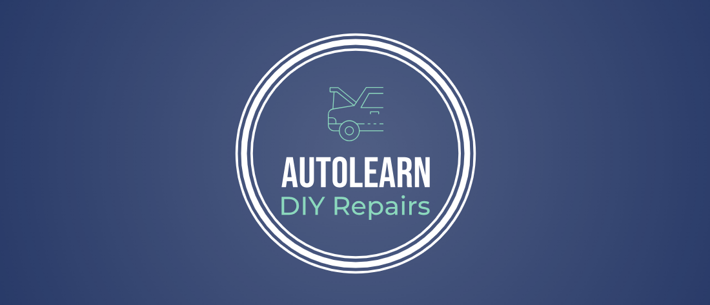

<html lang="en"></html>
    <head>
        <meta charset="utf-8">
        <title>AutoLearn DIY Reapairs</title>
    </head>
    <body>
        <!--Panamoric image-->
        
        <h1>Welcome to AutoLearn</h1>
        <p> AutoLearn includes troubleshooting guides to help users identify common car issues, offering simple diagnostic tips like recognizing unusual sounds or dashboard warnings.</p>
        <!-- Kayak Image -->
         
        <h2>DIY - Tutorials</h2>
        <p>Once diagnosed, AutoLearn provides <a href= https://servicingmaster.co.uk/blog/25-most-common-car-problems/ >step-by-step</a> repair tutorials tailored to beginners, ensuring users can safely perform the task, whether it’s replacing a part or fixing an issue.</p>
        
        <h3>Oil Change</h3>
        <ul>
            <li>Duration: 5 hours approx.</li>
            <li>Description: Learn how to rotate your tires to extend their life and ensure even wear.</li>
            <li>Tools Needed: Car jack, jack stands, lug wrench, torque wrench, gloves</li>
        </ul>


    </body>
</html>